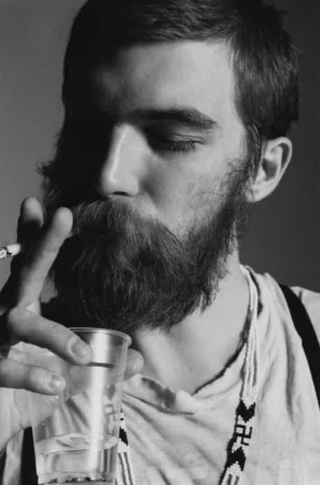

Daryush "Roosh" Valizadeh created ROK in October 2012. You can visit his blog at RooshV.com or follow him on Twitter and Facebook.


I have not completely shaved my face is over five years. During that time I’ve continuously sported a beard and have learned the dos and don’ts of how to keep it aesthetically pleasing. Here’s what you need to know:
If your beard is more prominent, you will have the dreaded ax murderer look. It also has the effect of making your eyes more beady. Notice how these beards don’t match the head hair…

The white color has a balancing effect, preventing even a long white beard from clashing with a thin head of hair. Bald men with dark beard hair should keep it cropped close. Otherwise your face will look like a bushy vagina.
A beard should be one continuous, lush carpet. Otherwise you look sickly, like you just got over a terrible illness.

Your beard should not have sharp angles or any peculiar features. Your face is not a canvas, asshole.
Blonde beards tend to display more weakness than strength…
Guys with thick, dark eyebrows can generally wear any beard they want (I have thick eyebrows). Guys with thin or blonde eyebrows can’t.

The beard doesn’t exist outside of the individual—it must match your existing features. Here are some examples of great beards that match the man:

Just because you can grow a beard, doesn’t mean you should. You must weigh your beard genetics with your head hair to know if you should sport one or not.
Read Next: The Perfect Woman: Hair